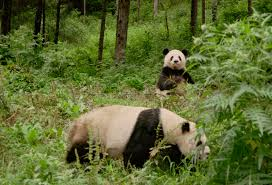

The Giant Panda is native to the mountain ranges of central China and is known for its distinctive black-and-white fur. Despite being classified as a carnivore, the Giant Panda's diet is primarily bamboo, making up over 99% of its intake.
Interesting Facts:
- Giant Pandas spend up to 14 hours a day eating bamboo to meet their nutritional needs.
- They have a special adaptation in their wrist bone, known as the “pseudo-thumb,” which helps them grip bamboo stems.
- Each panda has a unique pattern of black markings on its fur, making them identifiable to researchers.
- Pandas can climb trees and swim, although they prefer to stay on the ground.
Habitat:
Giant Pandas are found in the mountainous regions of Sichuan, Shaanxi, and Gansu provinces in China. They thrive in temperate forests with dense bamboo undergrowth and a cool climate. The preservation of these habitats is crucial for the survival of the species.
Read More on WikipediaDiet
| Food | Description |
|---|---|
| Bamboo | Main diet, making up 99% of their food intake. |
| Fruits | Occasionally eaten when available. |
| Insects | Sometimes consumed, providing additional protein. |
| Small Animals | Rarely eaten, but pandas are known to consume small mammals. |
Conservation Efforts
The Giant Panda was once considered critically endangered, but thanks to extensive conservation efforts, its status has improved to vulnerable. Conservation organizations and the Chinese government continue to work to protect pandas and their habitats.
Giant Panda in Action
Photo Gallery